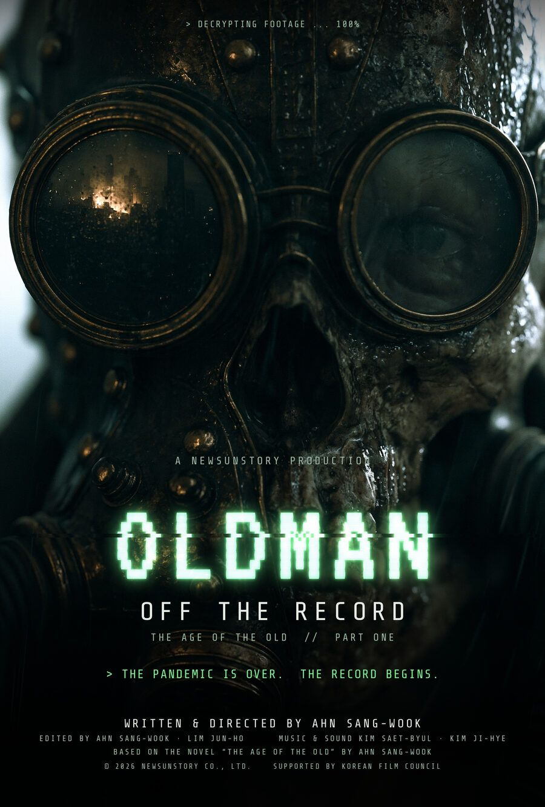
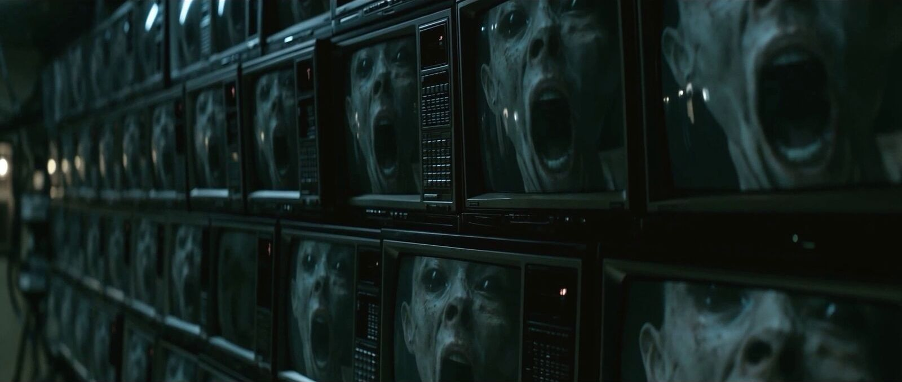
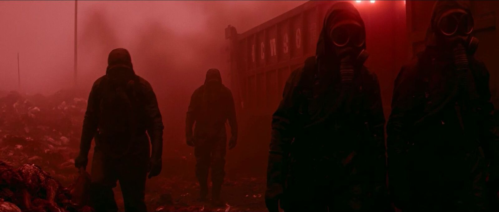
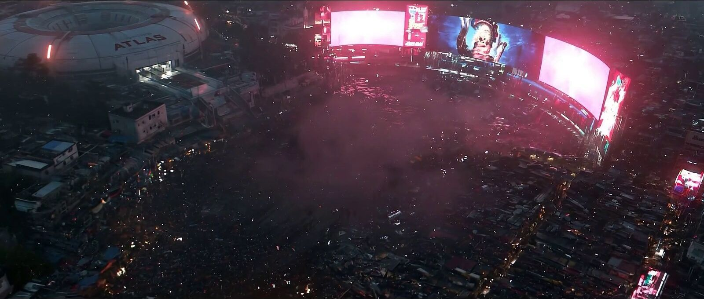
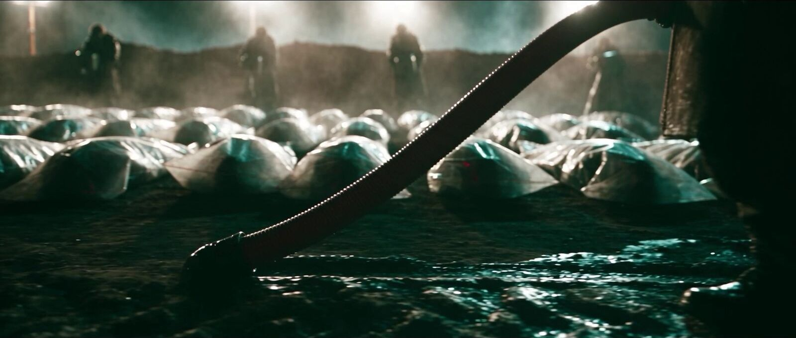
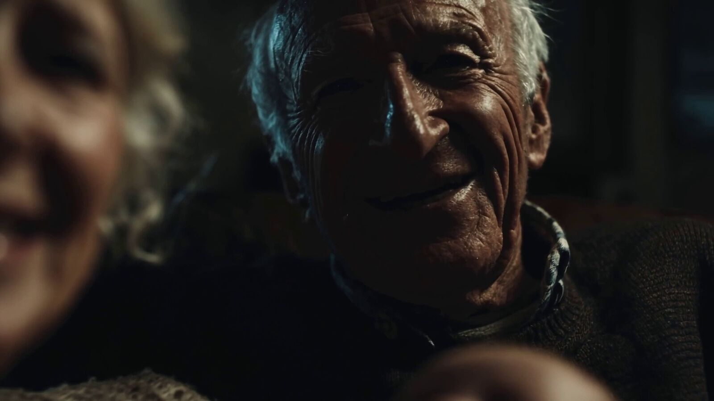
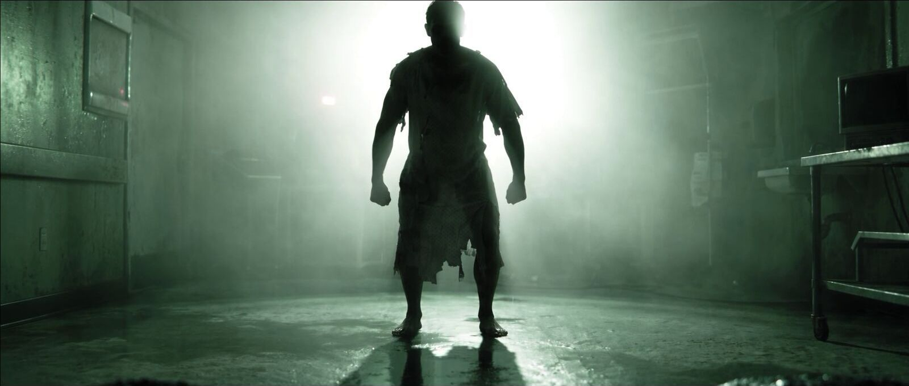
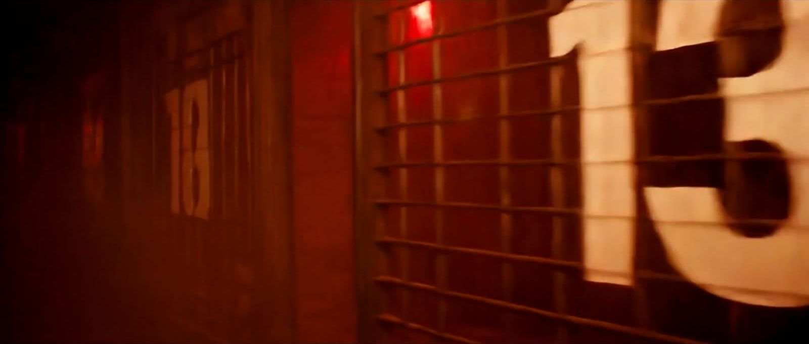
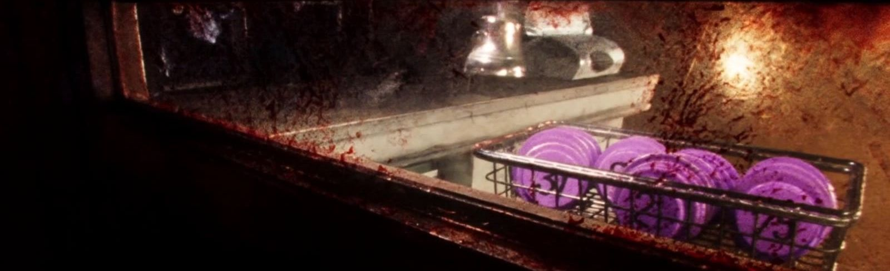
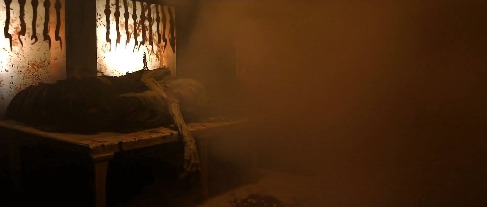

Special Exhibition · The Age of the Old
『노인의 시대』
옥시토신 호르몬제가 인구를 폭증시키고, 백신 전쟁 끝에 노인들이 지하로 내려간 세계. 원작 장편소설 『노인의 시대』에서 세 편의 영화가 갈라져 나옵니다.
The Age of the Old — a trilogy of AI films based on Ahn Sangwook's own novel.

1부 · Part One · 2026 · 15분
올드만 – 오프 더 레코드
익명의 해커가 세상이 봐서는 안 될 기록을 흘린다. 영원을 약속한 팬데믹 "치료제" 이후 노인들은 껍데기로 버려졌다 — 그중 한 명이 돌아오기 전까지는.
An anonymous hacker leaks the footage the world was never meant to see: after a pandemic "cure" that promised eternity, the old were discarded as empty shells — until one of them came back.
- SF 페이크 다큐멘터리 · 파운드 푸티지
- 영화진흥위원회 2026 AI 기반 영화 제작지원작
- 원작 장편소설 『노인의 시대』 1장 「올드만의 기억」






2부 · Part Two · 2027
카니발 – 침묵의 인터뷰
다음 전시를 준비하고 있습니다.

3부 · Part Three · 2026 · 10분
신곡 – 지옥의 라이브
심장에 자폭장치를 꿰맨 한 사람이 지하 일곱 층을 지나 위로 올라간다. 그 모든 길이 생중계된다.
- 1인칭 생중계 형식
- 부천 · SBS A&T AI 영화 교육 수료작
- 영상은 영화제 상영 뒤에 공개합니다

